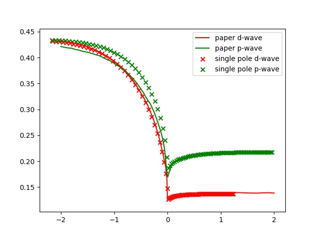
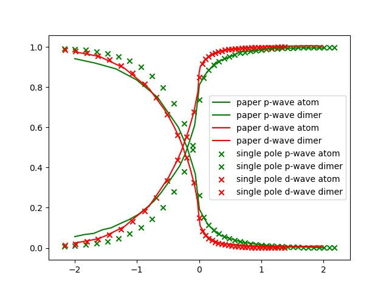
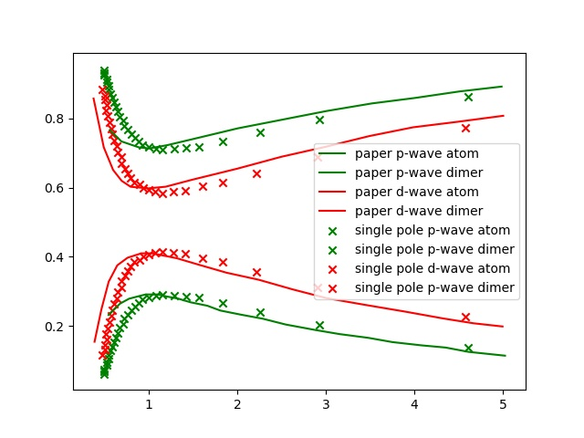

NSR Calaulate IV
Table of Contents



1. 结果
1.1. p-wave
其中
\begin{align} \tilde{\delta}_{m=0}^p (\vec{q}, z) = \mathrm{Arg}\left[ \frac{1}{4\pi}\cdot\frac{2R_p}{k_{\varepsilon}^2v_p} + \frac{1}{4\pi}\cdot \tilde{z} + \frac{2R_p}{Mk_{\varepsilon}^2}\Pi_r^p(\vec{q}, z+\mathrm{i}0^+) \right] \end{align} \begin{align} \frac{2R_p}{Mk_{\varepsilon}^2}\Pi_r^p(\vec{q}, z) = \frac{2}{\pi^2}k_{\varepsilon}R_p \int_0^{\infty}\mathrm{d}\tilde{k}\left[ -\frac{1}{2}\tilde{k}^2 - \frac{\tilde{z}}{4} + \frac{3}{4\pi} \frac{\tilde{k}^{4}}{2\tilde{k}^2 - \tilde{z}}F^p(k,\theta_q) \right] \end{align}\(F(k, \theta_q)\) 为 \(\vec{k}\) 的角度积分
\begin{align} F^p(k, \theta_q) = \int_0^{\pi} \mathrm{d}\theta_k \int_0^{2\pi} \mathrm{d} \phi_k \sin \theta_k \cos^2 \theta_k\left[ 1 + \frac{1}{e^{\tilde{\beta}(\tilde{k}^2+\tilde{q}^2/4 + \tilde{k}\tilde{q}x -2\mu)}-1} + \frac{1}{e^{\tilde{\beta}(\tilde{k}^2+\tilde{q}^2/4 - \tilde{k}\tilde{q}x -2\mu)}-1} \right] \end{align}\(x\) 为 \(\vec{k}\) 与 \(\vec{q}\) 夹角的余弦:
\begin{align} x =\cos \theta_{kq} = \sin\theta_k \sin \theta_q \cos(\phi_k-\phi_q) + \cos \theta_k \cos \theta_q \end{align}1.2. d-wave
d-wave 与 p-wave 的不同之处在于 \(\tilde{\delta}^d_{m=0}(\vec{q}, z)\) 多了一项, 以及 \(\Pi_r^d\) 中 \(l = 2\) , 由于 \(l\) 不同, 角度积分中的 \(Y_l^m\) 也不同.
\begin{align} \tilde{\delta}_{m=0}^d (\vec{q}, z) = \mathrm{Arg}\left[ \frac{1}{4\pi}\cdot\frac{2v_d}{k_{\varepsilon}^2D_d} + \frac{1}{4\pi}\cdot \tilde{z} + \frac{1}{4\pi}\cdot \tilde{z}^2 \frac{k_{\varepsilon}^3v_d}{2\cdot R_d k_{\varepsilon}} + \frac{2v_d}{Mk_{\varepsilon}^2}\Pi_r^d(\vec{q}, z+\mathrm{i}0^+) \right] \end{align} \begin{align} \frac{2v_d}{Mk_{\varepsilon}^2}\Pi_r^d(\vec{q}, z) = \frac{2}{\pi^2}k_{\varepsilon}^3v_d \int_0^{\infty}\mathrm{d}\tilde{k}\left[ -\frac{1}{2}\tilde{k}^4 - \frac{\tilde{z}}{4}\tilde{k}^2 - \frac{\tilde{z}^2}{8} + \frac{5}{16\pi} \frac{\tilde{k}^6}{2\tilde{k}^2 - \tilde{z}}F^d(k,\theta_q) \right] \end{align} \begin{align} F^d(k, \theta_q) = \int_0^{\pi} \mathrm{d}\theta_k \int_0^{2\pi} \mathrm{d} \phi_k \sin \theta_k (3\cos^2 \theta_k - 1)^2\left[ 1 + \frac{1}{e^{\tilde{\beta}(\tilde{k}^2+\tilde{q}^2/4 + \tilde{k}\tilde{q}x -2\mu)}-1} + \frac{1}{e^{\tilde{\beta}(\tilde{k}^2+\tilde{q}^2/4 - \tilde{k}\tilde{q}x -2\mu)}-1} \right] \end{align}1.3. 单位说明
上式中均以总的粒子数定义 \(E_F\) , 即 \(k_n^3 = 6\pi^2n\) . 文章中也是以总粒子数定义. 因此直接画图得到的 d-wave 的结果.
对于 p-wave, 是两分量的, 同样用了总的粒子数定义 \(E_F\) , 但是相互作用能减半, 得到的即是文中的 p-wave 的结果.
2. 过程
2.1. p-wave
文章中公式 (12) (换成 p 波):
\begin{align} \tilde{\Omega}_{\mathrm{int}} = \sum_{m, \vec{q}} \int_{-\infty}^{+\infty} \frac{\mathrm{d}\omega}{\pi} \frac{1}{e^{\beta\omega}-1} \tilde{\delta}_m^p (\vec{q}, z) \end{align}忽略掉 \(m\neq 0\) 的部分, 并把对 \(\vec{q}\) 的求和化为积分:
\begin{align} \tilde{\Omega}_{\mathrm{int}} = \frac{V}{(2\pi)^3} \int \mathrm{d} \vec{q} \cdot \int_{-\infty}^{+\infty} \frac{\mathrm{d}\omega}{\pi} \frac{1}{e^{\beta\omega}-1} \tilde{\delta}_{m=0}^p (\vec{q}, z) \end{align}\(\tilde{\delta}_{m=0}^p (\vec{q}, z)\) 只与 \(\vec{q}\) 的大小和 \(\theta_{q}\) 有关, 所以:
\begin{align} \tilde{\Omega}_{\mathrm{int}} = \frac{V}{(2\pi)^3} \int_0^{\infty} \mathrm{d} q \int_0^{\pi}\mathrm{d} \theta_q \cdot q^2 \sin(\theta_q)\cdot 2\pi\cdot \int_{-\infty}^{+\infty} \frac{\mathrm{d}\omega}{\pi} \frac{1}{e^{\beta\omega}-1} \tilde{\delta}_{m=0}^p (\vec{q}, z) \end{align}无量纲后为
\begin{align} \frac{\tilde{\Omega}_{\mathrm{int}}}{Nk_{\varepsilon}^2/(2M)} = \frac{n_{\varepsilon}}{n}\frac{3}{2\pi} \int_0^{\infty} \mathrm{d} \tilde{q} \int_0^{\pi}\mathrm{d} \theta_q \cdot \tilde{q}^2 \sin(\theta_q)\cdot \int_{-\infty}^{+\infty} \mathrm{d}\tilde{\omega} \frac{1}{e^{\tilde{\beta}\tilde{\omega}}-1} \tilde{\delta}_{m=0}^p (\vec{q}, z) \end{align}其中 \(n= N/V\) 为粒子数密度. \(k_{\varepsilon}\) 为无量纲采用的单位, \(6\pi^2 n_{\varepsilon} = k_{\varepsilon}^3\) . 能量用 \(k_{\varepsilon}^2/(2M)\) 为单位.
\(\tilde{\delta}_{m=0}^p (\vec{q}, z)\) 为文章中 (15) 式:
\begin{align} \tilde{\delta}_{m=0}^p (\vec{q}, z) = \mathrm{Arg}\left[ \frac{M}{4\pi}\cdot\frac{1}{v_p} + z \frac{M^2}{4\pi}\cdot \frac{1}{R_p} + \Pi_r^p(\vec{q}, z+\mathrm{i}0^+) \right] \end{align}每项都提出一个 \(\frac{M k_{\varepsilon}^2}{2R_p}\) 后:
\begin{align} \tilde{\delta}_{m=0}^p (\vec{q}, z) = \mathrm{Arg}\left[ \frac{1}{4\pi}\cdot\frac{2R_p}{k_{\varepsilon}^2v_p} + \frac{1}{4\pi}\cdot \tilde{z} + \frac{2R_p}{Mk_{\varepsilon}^2}\Pi_r^p(\vec{q}, z+\mathrm{i}0^+) \right] \end{align}其中 \(\tilde{z} = \frac{z}{k_{\varepsilon}^2/(2M)}\) 为无量纲后的 \(z\) . \(\Pi_r^p(\vec{q}, z)\) 为文章中 (16) 式
\begin{align} \label{eq:bigpi} \frac{2R_p}{Mk_{\varepsilon}^2}\Pi_r^p(\vec{q}, z) = \frac{2R_p}{Mk_{\varepsilon}^2} \left[ - \frac{M}{V}\sum_{\vec{k}}1 -z \frac{M^2}{V}\sum_{\vec{k}}\frac{1}{k^2} + \Pi^{l=1}(\vec{q}, z) \right] \end{align}\(\Pi^{l=1}(\vec{q}, z)\) 为文章中 (9) 式的结果:
\begin{align} \label{eq:smallpi} \Pi^{l=1}(\vec{q}, z) = \frac{1}{V} \sum_{\vec{k}}\left\{ k^24\pi |Y_{l=1}^{m=0}(\hat{k})|^2 \frac{1 + n(\xi_{\vec{k}+\vec{q}/2}) + n(\xi_{-\vec{k}+\vec{q}/2})} {\xi_{\vec{k}+\vec{q}/2} + \xi_{-\vec{k}+\vec{q}/2} - \omega} \right\} \end{align}将球谐函数的具体形式 \(Y_{l=1}^{m=0}(\hat{k})= \frac{1}{2}\sqrt{\frac{3}{\pi}}\cos\theta_k\) 代回到上式, 再将上式代回式 (\ref{eq:bigpi}) , 并将对 \(\vec{k}\) 的求和化为积分后得
\begin{align} \frac{2R_p}{Mk_{\varepsilon}^2}\Pi_r^p(\vec{q}, z) = \frac{2}{\pi^2}k_{\varepsilon}R_p \int_0^{\infty}\mathrm{d}\tilde{k}\left[ -\frac{1}{2}\tilde{k}^2 - \frac{\tilde{z}}{4} + \frac{3}{4\pi} \frac{\tilde{k}^4} {\tilde{\xi}_{\vec{k}+\vec{q}/2} + \tilde{\xi}_{-\vec{k}+\vec{q}/2} - \tilde{\omega}}F(k,\theta_q) \right] \end{align}其中 \(\tilde{k} = k/k_{\varepsilon}\) , \(\tilde{\xi}_{\vec{k}+\vec{q}/2} = \frac{\xi_{\vec{k}+\vec{q}/2}}{k_{\varepsilon}^2/(2M)}\) . 将 \(\tilde{\xi}_{\vec{k}+\vec{q}/2} = \tilde{k}^2 + q^2/4 + \tilde{k}\tilde{q} x-\mu\) 以及 \(\tilde{z} = \tilde{\omega} - \tilde{q}^2/2 + 2\mu\) 代入上式, 可以对 最后一项的分母化简
\begin{align} \tilde{\xi}_{\vec{k}+\vec{q}/2} + \tilde{\xi}_{-\vec{k}+\vec{q}/2} - \tilde{\omega} = 2\tilde{k}^2 - \tilde{z} \end{align}而 \(F(k, \theta_q)\) 为 \(\vec{k}\) 的角度积分
\begin{align} F(k, \theta_q) = \int_0^{\pi} \mathrm{d}\theta_k \int_0^{2\pi} \mathrm{d} \phi_k \sin \theta_k \cos^2 \theta_k\left[ 1 + \frac{1}{e^{\tilde{\beta}(\tilde{k}^2+\tilde{q}^2/4 + \tilde{k}\tilde{q}x -2\mu)}-1} + \frac{1}{e^{\tilde{\beta}(\tilde{k}^2+\tilde{q}^2/4 - \tilde{k}\tilde{q}x -2\mu)}-1} \right] \end{align}其中 \(x\) 为 \(\vec{k}\) 与 \(\vec{q}\) 夹角的余弦:
\begin{align} x =\cos \theta_{kq} = \sin\theta_k \sin \theta_q \cos(\phi_k-\phi_q) + \cos \theta_k \cos \theta_q \end{align}所以最终要算的是对 \(\tilde{\omega}, \tilde{q}, \theta_q, \tilde{k}, \theta_k, \phi_k\) 的积分.
2.2. d-wave
与 p-wave 类似.